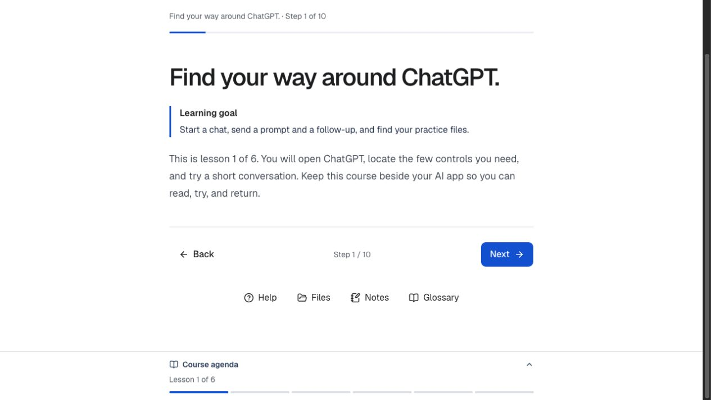

Follow one visible path
A course outline, step-level progress, and focused activity view show where you are without crowding the task.
AI Workshop Studio
A guided course and live workshop space that helps people move from a first prompt to a small, checkable workflow. The course pairs plain-language guidance with practice, reflection, and evidence.
Start with the free course preview.

Practice with a purpose
Learners work with supplied practice files, compare drafts against source material, revise one thing at a time, and record what changed. The structure supports both independent study and a room led by a facilitator.
Inside the learning experience
The course makes the next action clear while leaving the thinking with the learner.
A course outline, step-level progress, and focused activity view show where you are without crowding the task.
Downloadable briefs, notes, prompt examples, and test cases give each exercise a concrete starting point and finish.
Knowledge checks, completion criteria, examples, and reflection prompts make progress visible beyond simply generating output.
Built for a room, too
A facilitator creates a private room and shares one code. Learners join from their own devices while a separate presentation view keeps the group together.
See workshops and room access (opens in a new tab)Design decisions
Start with the first lesson